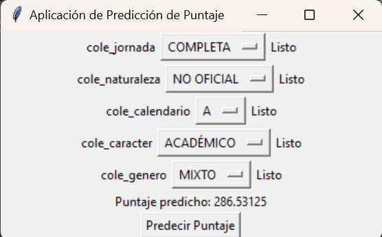
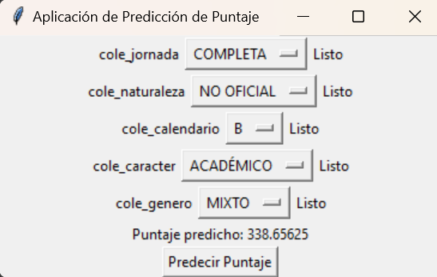

Machine Learning, predicción del puntaje global#
La aplicación de ML elegida es la predicción del desempeño de un individuo por medio de un modelo de regresión, el cual busca predecir el puntaje global de los estudiantes basado en las características de naturaleza del colegio, calendario, género, carácter y jornada.
Se importan las librerias para la utilización de los datos
from sqlalchemy import create_engine
import pandas as pd
Parámetros y conexión con AWS
host = 'postgres.cspcvpb5rw4y.us-east-1.rds.amazonaws.com'
port = '5432'
user = 'jrocha'
password = 'fjwvacC_d6iupULVdyK7'
database = 'analitica'
connAlchemy = create_engine(f'postgresql://{user}:{password}@{host}:{port}/{database}')
conn = connAlchemy.raw_connection()
cur = conn.cursor()
La base que se va a utilizar es analitica colegio, la cual contiene las variables id, cole_cod_dane_establecimiento, cole_jornada, cole_naturaleza, cole_calendario, cole_nombre_establecimiento, cole_caracter, cole_area_ubicacion, cole_genero, prom_punt_global.
data = pd.read_sql("SELECT * FROM analitica_colegio", con= connAlchemy)
data.head()
Dado que se cuenta con variables que no otorgan información para el modelo de predicción en la base de datos total, se creó una base de datos que contiene las variables independientes de interés.
df_ind = pd.read_sql(
"""
SELECT
a.cole_jornada,
a.cole_naturaleza,
a.cole_calendario,
a.cole_caracter,
a.cole_genero
FROM
analitica_colegio as a
""",
con=connAlchemy,
)
df_ind.head()
A partir de esto, se transformaron las variables independientes que eran texto a dummies mediante one-hot encoding de pandas y se definió la variable dependiente promedio puntaje global como la variable a predecir. También, se separa la muestra entre conjunto de entrenamiento y conjunto de prueba y se entrena un modelo de regresión lineal para la predicción de la variable dependiente promedio puntaje global.
Con el fin de hacerlo más interactivo, se diseño una interfaz de usuario utilizando ‘tkinter’ con listas desplegables para seleccionar las características del estudiantes y predecir su puntaje, mostrando el resultado de la predicción en la interfaz por medio de un botón.
import tkinter as tk
from sklearn.linear_model import LinearRegression
from sklearn.model_selection import train_test_split
from sklearn.impute import SimpleImputer
def main():
X = pd.get_dummies(df_ind)
y = data["prom_punt_global"]
X_train, X_test, y_train, y_test = train_test_split(
X, y, test_size=0.2, random_state=42
)
model = LinearRegression()
model.fit(X_train, y_train)
model.predict(X_test)
crear_aplicacion(model)
def crear_aplicacion(modelo):
app = tk.Tk()
app.title("Aplicación de Predicción de Puntaje")
datos_entrada = [
"cole_jornada_COMPLETA",
"cole_jornada_MAÑANA",
"cole_jornada_NOCHE",
"cole_jornada_SABATINA",
"cole_jornada_TARDE",
"cole_jornada_UNICA",
"cole_naturaleza_NO OFICIAL",
"cole_naturaleza_OFICIAL",
"cole_calendario_A",
"cole_calendario_B",
"cole_calendario_OTRO",
"cole_caracter_",
"cole_caracter_ACADÉMICO",
"cole_caracter_NO APLICA",
"cole_caracter_TÉCNICO",
"cole_caracter_TÉCNICO/ACADÉMICO",
"cole_genero_FEMENINO",
"cole_genero_MASCULINO",
"cole_genero_MIXTO",
]
opciones_agrupadas = {
"cole_jornada": "Seleccione jornada",
"cole_naturaleza": "Seleccione naturaleza",
"cole_calendario": "Seleccione calendario",
"cole_caracter": "Seleccione caracter",
"cole_genero": "Seleccione genero",
}
vars_caracteristicas = {
grupo: tk.StringVar() for grupo in opciones_agrupadas.keys()
}
etiquetas_seleccion = {}
for grupo, default_option in opciones_agrupadas.items():
grupo_frame = tk.Frame(app)
grupo_frame.pack()
tk.Label(grupo_frame, text=f"{grupo}").pack(side=tk.LEFT)
opciones = ["No seleccionar"] + [
opcion.split("_", 2)[-1]
for opcion in datos_entrada
if opcion.startswith(grupo)
]
lista_desplegable = tk.OptionMenu(
grupo_frame,
vars_caracteristicas[grupo],
default_option,
*opciones,
command=lambda value, grupo=grupo: etiquetas_seleccion[grupo].config(
text="Listo"
),
)
lista_desplegable.pack(side=tk.LEFT)
etiquetas_seleccion[grupo] = tk.Label(grupo_frame, text=default_option)
etiquetas_seleccion[grupo].pack(side=tk.LEFT)
resultado_prediccion = tk.Label(app, text="")
resultado_prediccion.pack()
def predecir_puntaje():
caracteristicas_seleccionadas = []
for grupo, opcion_var in vars_caracteristicas.items():
opcion_seleccionada = opcion_var.get()
if opcion_seleccionada != "No seleccionar":
caracteristicas_seleccionadas.append(grupo + "_" + opcion_seleccionada)
if not caracteristicas_seleccionadas:
resultado_prediccion.config(text="Ninguna característica seleccionada")
return
df_prediccion = pd.DataFrame(columns=datos_entrada)
for caracteristica in datos_entrada:
if caracteristica in caracteristicas_seleccionadas:
df_prediccion[caracteristica] = [1]
else:
df_prediccion[caracteristica] = [0]
imputer = SimpleImputer(strategy="mean")
df_prediccion_imputed = pd.DataFrame(
imputer.fit_transform(df_prediccion), columns=df_prediccion.columns
)
puntaje_predicho = modelo.predict(df_prediccion_imputed)
resultado_prediccion.config(text=f"Puntaje predicho: {puntaje_predicho[0]}")
btn_predecir = tk.Button(app, text="Predecir Puntaje", command=predecir_puntaje)
btn_predecir.pack()
app.mainloop()
Ejecuta la función y muestra la interfaz de usuario
main()


En esta aplicación, puede revisarse por factores, manteniendo todas las demás variables constantes, los efectos de las diferentes categorías de características institucionales, facilitando el análisis.
Por ejemplo, en el caso de un colegio con jornada completa, de naturaleza no oficial, calendario A, caracter académico y género mixto, el modelo de ML predice que el resultado promedio de la institución será de 286 aproximadamente. Mientras que en el caso de un colegio con las mismas condiciones pero de calendario B tiene un promedio en el puntaje global de 338, lo cual podría indicar menor cantidad de estudiantes, variación en la calidad de la educación entre calendarios, entre otros factores que aportan al análisis del sistema educativo en el país.
Este modelo de ML, que realiza predicciones del promedio del puntaje global con base en características institucionales, permite plantear una mejora de las políticas educativas o realizar intervenciones tempranas en el tipo de instituciones identificadas con menor puntaje para poder mejorar su desempeño académico, contribuyendo a los estudiantes, educadores y el sistema educativo en general.